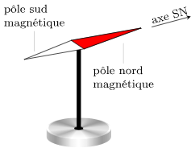
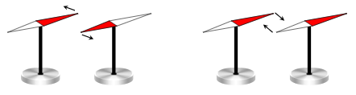
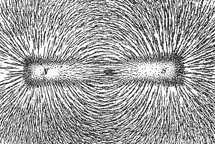
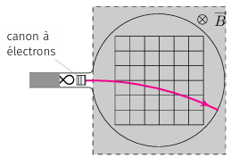
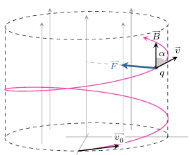
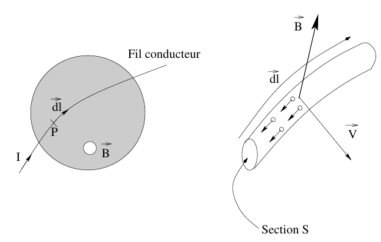

Ce cours introduit la notion de champ magnétique en laissant de côté son origine. On se
concentre ici sur les interactions magnétiques :
l’interaction de Lorentz entre une charge et un champ magnétique
l’interaction de Laplace entre un conducteur parcouru par un courant électrique et un
champ magnétique
Les aimants
Propriétés des aimants
La pierre d’aimant qui a la propriété d’attirer les petits morceaux de fer, est
connue depuis l’antiquité grecque. On trouve cette pierre étonnante dans la région de
Magnésie, en Asie Mineure. On sait aujourd’hui qu’elle est formée essentiellement d’oxyde
de fer \(\mathrm{Fe_3O_4}\) que l’on appelle magnétite. Façonnée et polie en forme de
cuiller, elle est utilisée en Chine dès le IIIe siècle
à des fins divinatoires. Il faut attendre l’an Mille environ pour voir apparaître les
premières boussoles. Elle est adoptée par les navigateurs arabes puis européens pour
s’orienter en mer. L’usage du compas de marine devient primordial avec les grandes
explorations à la Renaissance. Sa pièce principale est une aiguille d’acier que l’on a
aimantée par frottement contre une pierre d’aimant.

Aiguille aimantée.
Les aimants présentent toujours au moins deux pôles, appelés pôle sud et pôle nord. Lorsque
l’on approche deux aimants, on met aisément en évidence deux types d’interaction :
deux pôles de mêmenature se repoussent alors que deux pôles de nature différente s’attirent.

Interaction entre aimants.
Notion de champ magnétique
Expérience :
En un point de la surface terrestre et en l’absence d’aimants ou de circuits électriques,
l’aiguille d’une boussole s’oriente dans la direction Sud-Nord. Approchons un
aimant : l’orientation de la boussole s’en trouve modifiée. Déplaçons la boussole
autour de l’aimant : la direction de la boussole varie d’un point à l’autre. Enfin,
perturbons l’aiguille de la boussole : elle se met à osciller autour de la direction
indiquée initialement. Si l’on rapproche l’aimant, l’aiguille oscille de plus en plus vite.
Interprétation :
Sur Terre, il règne un champ de force magnétique qui oriente toutes les boussoles dans
l’axe sud-nord. Par convention, le pôle qui indique le nord est appelé pôle nord de la
boussole, l’autre étant alors le pôle sud.
Un aimant modifie les propriétés magnétiques de l’espace : il crée un champ
magnétique. Ce champ présente une direction donnée par la boussole et un sens donné par
l’axe sud-nord de la boussole.
Enfin, plus ce champ est important, plus l’aiguille est forcée de s’aligner avec ce champ
ce qui explique l’augmentation de la fréquence des oscillations.
Conclusion :
L’espace est caractérisé par un champ de force qui présente les attributs d’un vecteur que
l’on nomme vecteur champ magnétique et que l’on note généralement \(\overrightarrow{B}(M)\).
Ce champ est détectable par une boussole.
Une façon de visualiser le champ magnétique que produit un aimant consiste à disperser
autour, de la limaille de fer : les aiguilles de fer s’aimantent puis de comportent
comme de petites boussoles qui s’orientent suivant le champ magnétique local.

Spectre magnétique : les grains de limaille de fer se comportent comme de
petites boussoles, matérialisant ainsi les lignes de champ.
Force de Lorentz
Définition du champ magnétique
Le champ magnétique est défini à partir de la force de déflexion que ressent une particule
chargée en présence d’une source de champ magnétique.
Considérons un tube de Crookes dans lequel on produit un faisceau d’électrons entre deux
électrodes. Les électrons, en entrant en collision avec les quelques molécules du gaz
résiduel du tube, produisent une lumière de fluorescence, rendant ainsi visible leur
trajectoire.
Approchons maintenant un aimant perpendiculairement à la vitesse initiale : le
faisceau est alors dévié tout en restant dans un plan perpendiculaire au champ magnétique.
Ainsi, une charge électrique en mouvement ressent, en plus de la force électrique, une
force de nature magnétique.

Déflexion magnétique.
L’analyse de la trajectoire montre que la force électromagnétique que subit une particule
chargée en mouvement s’écrit :
$$
\quad \boxed{ \overrightarrow{f}
= \underbrace{q\overrightarrow{E}}_{\rm{force\;électrique}}
+ \underbrace{q\overrightarrow{v} \wedge \overrightarrow{B}}_{\rm{force\;magnétique}} }
$$
Dans le Système International d’Unités, le champ magnétique s’exprime en Tesla.
L’analyse dimensionnelle montre que
$$
\quad [f] = \mathrm{ILB} \Rightarrow 1\,\mathrm{T} = 1\,\mathrm{N.A^{-1}m^{-1}}
$$
La force magnétique étant constamment perpendiculaire au vecteur vitesse, elle ne fournit
pas de puissance mécanique et donc pas de travail.
$$
\quad \overrightarrow{f} \perp \overrightarrow{v}
\Rightarrow \mathcal{P} = \overrightarrow{f} \cdot \overrightarrow{v} = 0
$$
Par conséquent, en vertu du
théorème de l’énergie cinétique, une particule soumise uniquement à la force magnétique
conserve sa vitesse constante en norme :
$$
\quad \frac{\mathrm{d}}{\mathrm{d}t}\left( \frac{1}{2}mv^2\right) = \mathcal{P} = 0
$$
La force magnétique incurve la trajectoire sans modifier la vitesse de la particule.
La force magnétique ne travaille pas. Cependant, si le champ magnétique varie dans le temps,
il apparaît un champ électrique lié à la variation du champ magnétique (phénomène
d’induction) qui, lui, travaille.
Particule dans un champ magnétique uniforme
Étudions le mouvement d’une particule de charge \(q\) située dans une zone où règne un champ
magnétique uniforme et permanent \(\overrightarrow{B}\). On néglige la force de gravitation
devant la force de Lorentz.
Dans la
base de Frenet, l’accélération de la particule s’écrit :
$$
\overrightarrow{a} = \frac{\mathrm{d}v}{\mathrm{d}t} \vec{t} + \frac{v^2}{R} \vec{n}
= \frac{v^2}{R} \vec{n}
$$
Dans le référentiel d’étude supposé galiléen, la seconde loi de Newton donne
$$
\quad |q|vB\sin(\alpha) = m \frac{v^2}{R}
$$
où \(\alpha\) représente l’angle que fait le vecteur vitesse avec le vecteur champ
magnétique.
Trois cas de figure se présentent :
\(\alpha = 0\) ou \(\pi\) : la force magnétique est nulle et le vecteur vitesse
reste constant en direction et en norme. Le mouvement est rectiligne uniforme.
\(\alpha = \pi/2\) : la vitesse n’a pas de composante suivant
\(\overrightarrow{B}\) et la force est perpendiculaire au champ magnétique. Ainsi,le
mouvement s’effectue dans le plan formé par la vitesse \(\overrightarrow{v}\) et la
force de Lorentz. Par ailleurs, le rayon de courbure vaut \(R = \frac{mv}{|q|B}\). Ce
rayon de courbure est constant si le champ magnétique est uniforme et permanent :
la trajectoire est donc un cercle de rayon R.
Ce cercle est décrit à la vitesse angulaire
$$
\quad \omega_c = \frac{v}{R} = \frac{|q|B}{m}
$$
Cette vitesse angulaire est aussi appelée pulsation cyclotron.
Dans les autres cas, il est facile de montrer que la composante de la vitesse suivant
la direction du champ magnétique reste constante. Le mouvement se décompose alors en un
mouvement uniforme suivant le champ magnétique et un mouvement circulaire dans un plan
perpendiculaire. On obtient un mouvement hélicoïdal dont l’axe est le champ magnétique et
le rayon de courbure vaut \(R = \frac{mv}{|q|B}\sin(\alpha)\).

Mouvement hélicoïdal d’une particule de charge négative dans un champ
magnétique.
Remarque :
Une particule accélérée dissipe de l’énergie sous la forme d’un rayonnement
électromagnétique, dit rayonnement cyclotron, et a pour effet une diminution de la vitesse
(et donc du rayon decourbure) au cours du temps. Cet effet est négligé ici.
Interaction magnétique avec les courants électriques
Force de Laplace
Considérons un conducteur filiforme parcouru par un courant électrique d’intensité \(I\) en
présence d’un champ magnétostatique \(\overrightarrow{B}\). Admettons que ce conducteur
soit en mouvement dans le champ magnétique et analysons les forces qui s’exercent sur une
portion orientée \(\overrightarrow{\mathrm{d}\ell}\) du conducteur.
Adoptons les notations suivantes :
\(s\) est la section droite du fil conducteur
\(n_-\) est le nombre de porteurs de charges mobiles (charges \(q_-\)) par unité de
volume
\(n_+\) est le nombre de cations fixes (charges \(q_+\)) par unité de volume assurant
la neutralité de la matière
\(\overrightarrow{V}\) est la vitesse de la portion de conducteur par rapport au
laboratoire
\(\overrightarrow{v}\) est la vitesse moyenne des porteurs de charge libres par
rapport au conducteur

Notations pour la force de Laplace.
L’électroneutralité du conducteur impose \(n_-q_- + n_+q_+ = 0\).